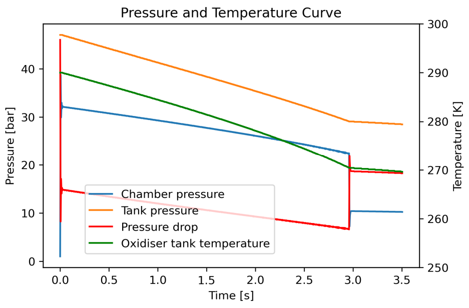
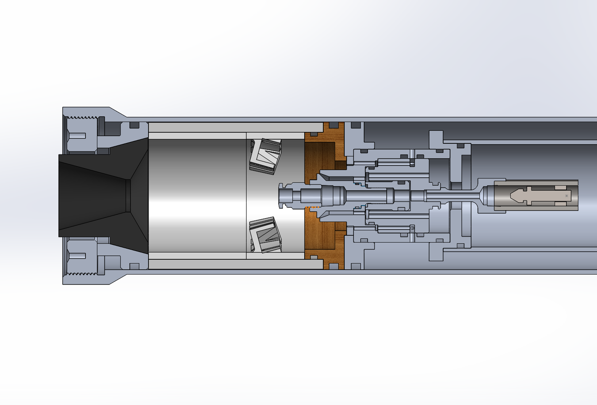
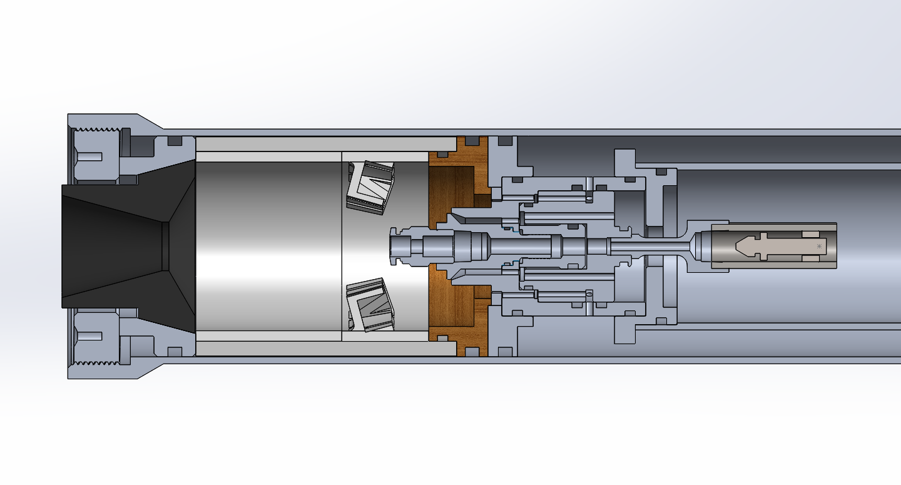
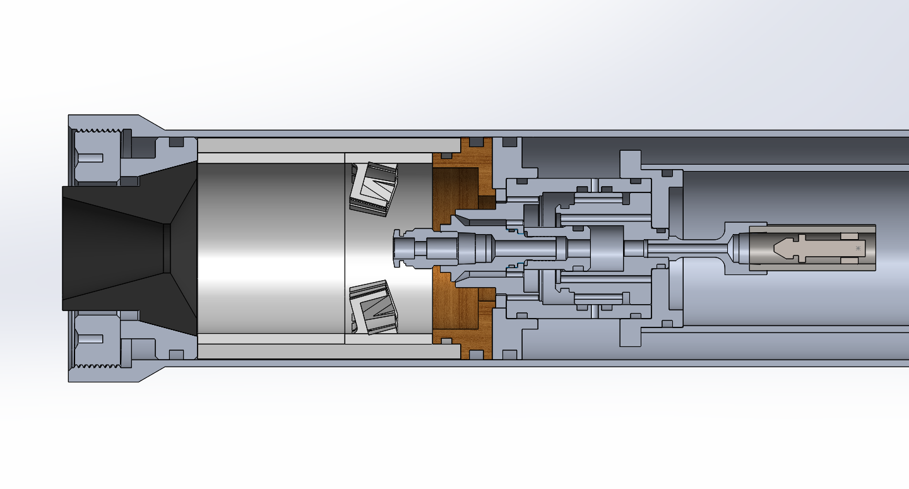
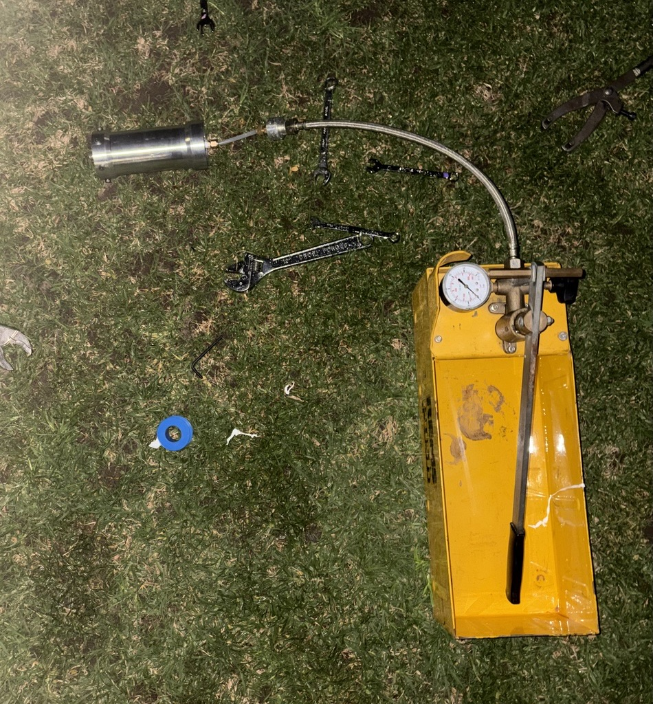
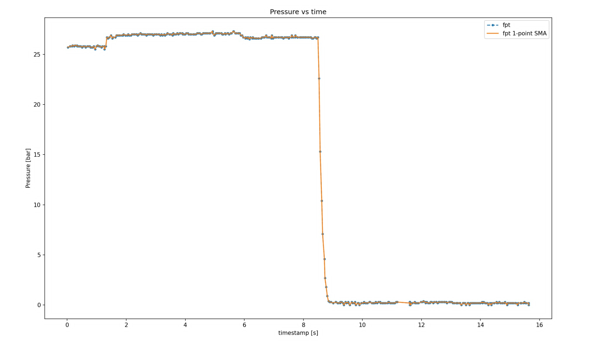

Scope
- Design and machine a nitrous oxide and IPA liquid rocket engine with fully custom concentric tanks, floating piston, and a UC valve.
- Develop a valve and injector architecture compatible with manual lathe and mill fabrication while preserving performance and control.
- Characterise injector flow, discharge coefficients, and spray geometry through water and cold gas testing before hot fire.
- Build instrumentation for live pressure, temperature, thrust and video telemetry to validate system behaviour and safety.
Key Characteristics
Predicted engine performance
Peak thrust of 700 N with a 480 N average, giving a total impulse of 1840 Ns and placing the engine in the approximate K480 motor class. Assuming modest 65% C* efficiency.
Simulation informed design
Feed system and injector were sized using thermodynamic simulation outputs, pressure/temperature modelling and propellant massflow estimates.
Floating piston and concentric tanks
Concentric oxidiser and fuel tubes with a floating piston separation. Nitrous oxide is used to pressurise the IPA.

Predicted thrust curve
Simulation thrust curve to compare against empirical results and inform design.

Predicted thermodynamics
Pressure and temperature modelling to used to find pressure drops and initial conditions for engine.
Design Overview
Concentric tank and floating piston
The engine uses a concentric tank geometry with a 48 mm inner oxidiser tube and a 76.2 mm outer fuel tube. A floating piston separates the nitrous oxide from the fuel and maintains a pressure on the fuel from the nitrous.
Concentric tanks allowed for simplified valve design, makes for a floating piston less likely to cam and doesnt required an extra line to bring either the fuel or oxidiser from the top tank which is needed in a stacked tank design. The design also accommodates stock circularity variance through generous O-ring cross-sections, making the sealed assembly forgiving to the measured 0.2 mm ID variation in the tube stock.
Valve design
The valve is based on a UC style valve, extended to support both oxidiser and fuel actuation using just the oxidiser fill tube. This approach preserves the compatibility of a classic burn-through hybrid UC while adding a true pintle injector and an independent check valve to regain ignition timing control.
Using the dump function on the ground support equipment, the valve can now be actuated without relying on uncontrolled burn through. That removes the two biggest UC drawbacks, poor timing control and lack of true injector integration.

Valve geometry
Cross-section detail shows the oxidiser and fuel paths, pintle profile, and sealing interfaces.
Injector development
The injector is a pintle injector with an outer fuel annulus and an inner oxidiser pintle. Injector geometry was chosen to match target OF ratio and momentum ratios. The CdA values determined from the model and water testing of the 3D printed injectors were used to size the effective areas of the injector elements.
Initial sizing and testing produced a fuel injector area of approximately 2.03 mm² and an oxidiser area of 20.34 mm², with discharge coefficients of 0.8 for fuel and 0.4 for oxidiser. These values were iterated through modelling and flow testing to support the expected 0.35 kg/s total massflow.
Valve motion
Animation directly illustrates the valve actuation and the transition between open and closed states with flow paths.

Valve open state
The open position occurs when the fill line is dumped, pressure on the underside of the piston drops to atmospheric and the excess pressure on top of the piston allows it to be actuated open.

Valve closed state
In the closed state the unequal area of the valve piston exposed to the nitrous pressure ensures there is a net force holding the piston up.
Injector testing and characterisation
Testing began with 3D printed injector prototypes to verify flow rates and spray geometry. Separate inner and outer flow measurements were taken with different prints, and the data was used to derive empirical Cd values for fuel and oxidiser.
Water tests validated the injector performance, including spray angle and flow distribution. The test programme also aims to establish a correlation between 3D printed and machined injector behaviour with testing to take place soon, machined components have just been finished.
- Initial test showed outer flow higher than the model, so annulus sizing was corrected to match the predicted spray angle within ~2%.
- Adding a pseudo annulus for the outer flow holes helped direct the flow and increase mixing while preserving the target OF ratio.
- Pump fed water tests measured a mass flow of ~0.28 kg/s, matching simulations at the time.
- Final tuning produced empirical discharge coefficients near Cd_fuel = 0.8 and Cd_ox = 0.4, which was used as the basis for the final design. I am expecting some difference due to surface roughness, simplified geometry of the 3D print and the difference in fluid characteristics between water and especially the nitrous oxide.

Water validation
Water testing captured spray formation and helped refine the injector's discharge coefficients.
Manufacturing
All components were manufactured on manual lathes and mills from local tube stock and billet. Radial bolts are shoulder bolts, matched drilled with bushings and designed to NASA 5020b standards for bolted joints.
An aft thread on the engine assembly lets internal components be compressed to manage axial tolerance and reduces the need for extremely tight axial fits. This thread preload strategy and generous O-ring seals support manufacturability and ease of assembly.


Finished hardware
Valve, injector and hydro/cold flow tank components.

Finished valve
Completed main valve assembly.

Lathe work
Manual turning for the inner concentric tank.
Hydrostatic test campaign
A hydrostatic test campaign was completed on the full-scale valve and injector assembly with a sub-scale tank, validating leak-tightness and structural strength under pressure, as well as confirming valve actuation. All objectives were met, clearing the path for full-scale tank testing to begin.
- Verified leak-tightness of the concentric tank, floating piston and all O-ring seals at working pressure.
- Confirmed structural integrity of the full-scale valve body and injector assembly with no permanent deformation.
- Demonstrated reliable valve actuation under pressure, validating the pneumatic control approach.
- Full-scale tank testing is now underway, carrying forward the same valve and injector hardware.

Hydrostatic test
Hydrostatic test of the full-scale valve and injector assembly with sub-scale tanks.
Cold gas testing
A cold gas test campaign was conducted as a full wet dress rehearsal of the system, validating the assembly under representative conditions before proceeding to hot fire.
- Confirmed valve actuation and response times using nitrous oxide.
- Verified entire engine sealing under pressure.
- Used my custom-built data acquisition system for actuation, monitoring and data logging.
Cold gas test
Cold gas test of the full assembly using nitrous oxide.

Test data
Pressure and temperature data from the cold gas test campaign.